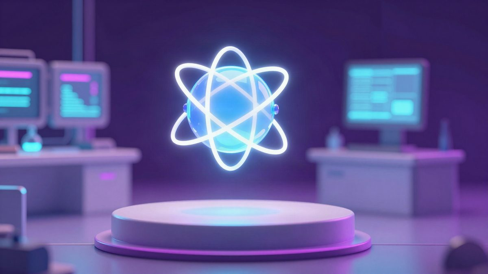

Google je predstavio Gemini 4 Hydrogen: 2,5 puta brži od Gemini 3.8 Flasha, dostupan i besplatnim korisnicima

Google je 12. studenoga 2026. predstavio model Gemini 4 Hydrogen, koji po vlastitim podacima zadatke završava 2,5 puta brže od Gemini 3.8 Flasha. Dostupan je u Gemini aplikaciji i Google pretrazi, a uz njega u alatu Antigravity stiže i Orchestrator. Cijene još nisu poznate, a nije rečeno ni kad model stiže u Europu.
Google je 12. studenoga 2026. predstavio novi model Gemini 4 Hydrogen. Tvrdi da je sa standardnim postavkama 2,5 puta brži od dosadašnjeg brzog modela Gemini 3.8 Flash, a da netočne odgovore daje do pet puta rjeđe. Dostupan je u Gemini aplikaciji i Google pretrazi, i to besplatnim korisnicima.
Hydrogen je treći novi model u seriji Gemini 4 u šest tjedana. Google je u rujnu predstavio Gemini 4 Argon, a u listopadu Gemini 4 Carbon, koji je jak u zaključivanju, ali skuplji za korištenje. Hydrogen je nastao na temelju Carbona i namijenjen je svakodnevnom programiranju i radu agenata. Agenti samostalno koriste vanjske alate, pišu kod, ispravljaju greške i analiziraju dokumente.
Rezultati i mogućnosti
Google navodi da je na testu Terminal-Bench 4.1, koji mjeri rad u terminalu, rezultat porastao s 18,2 na 57,0 posto. Na testu SWE-sweep, koji mjeri pronalaženje i ispravljanje grešaka u softwareu, Hydrogen ima 13,5 posto, Claude Sonnet 5.5 3,1 posto, a GPT-6.1 Terra 5,8 posto. Na testu Agents' Last Exam v1.1 postigao je 71,6 posto.
Model obrađuje do milijun tokena ulaza te može zajedno analizirati PDF-ove, tablice, audio i video i iz njih složiti izvještaj. Razinu zaključivanja možeš birati između low, medium, high i nove xhigh.
Analitička kuća Artificial Analysis, neovisna o Googleu, navodi da je ukupna inteligencija modela malo ispod Claude Sonneta 5.5 i GPT-6.1 Sola. Trošak je oko tri puta manji nego kod Claude Sonneta 5.5, ali oko 2,5 puta veći nego kod GPT-6.1 Sola.
Orchestrator u Antigravityju
Google je u razvojni alat Antigravity dodao Hydrogen i novu funkciju Orchestrator, koja kombinira više modela. Kod složenog razvoja softwarea Carbon analizira strukturu koda i radi plan, a Hydrogen ispravlja kod i provjerava rad. Ako se pojavi problem, zadatak se vraća Carbonu radi korekcije plana. Googleovi testovi pokazuju uspješnost blizu one samog Carbona, uz u prosjeku 24 posto manju potrošnju kvote i 19 posto kraće trajanje rada.
Gemini aplikacija i pretraga
Gemini aplikacija bi sada trebala točnije razumjeti upute i birati potrebne alate, pa su ponovljene upute rjeđe potrebne. Google pretraga bolje obrađuje upite s više uvjeta, a rezultate prikazuje uz tablice i slike. Google kao primjer navodi pitanje o uređenju male garsonijere za 200 dolara (oko 185 eura) tako da se iz kreveta ne vidi na video pozivu. Gemini 3.5 Flash predložio je promjene rasporeda tekstom, a Hydrogen je ponudio konkretan namještaj i raspored uz referentne slike.
Dostupnost
Model se postupno uvodi diljem svijeta. Programeri ga mogu koristiti u Google AI Studiju i preko Gemini API-ja, a pretplatnici na Google AI Pro i Google AI Ultra i u Antigravityju. Besplatni korisnici Gemini aplikacije dobivaju ga automatskim odabirom prema vrsti upita, a u Google pretrazi dostupan je svima. Orchestrator (Carbon) i Orchestrator (Argon) imaju pretplatnici na AI Ultra, a pretplatnici na AI Pro dobivaju Orchestrator (Argon). Google planira proširiti podržane modele i planove.
Izvor: Gigazine